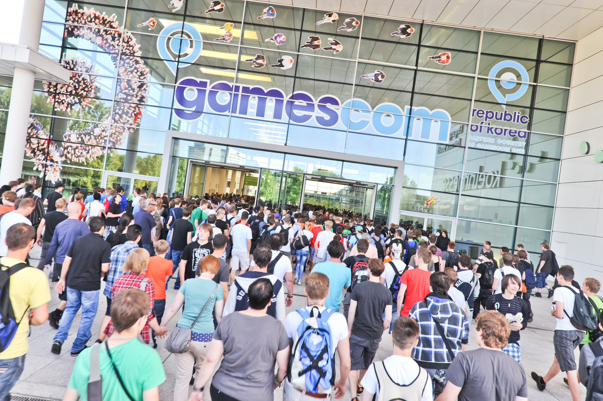

Gamescom
GAMESCOM

La gamescom es la feria europea más importante de electrónica de consumo interactiva, en especial de videojuegos. Numerosos expositores de todo el mundo presentan en esta feria sus novedades de software y hardware de ocio.
La feria se celebró por primera vez en 2009 en el recinto de la koelnmesse en Colonia, Alemania. La feria nació a partir de la iniciativa del Bundesverband Interaktive Unterhaltungssoftware (BIU), la "Organización Nacional de Software de Ocio Interactivo". Hasta 2008 la BIU se había encargado de colaborar en la organización de la Games Convention en Leipzig, hasta que se decidió el traslado a Colonia.
La feria cuenta con una sección abierta al público en general y una sección exclusiva para los profesionales del sector (entre ellos, expositores, periodistas y desarrolladores), entre los que se encuentran también conferencias técnicas como la Game Developers Conference Europe.